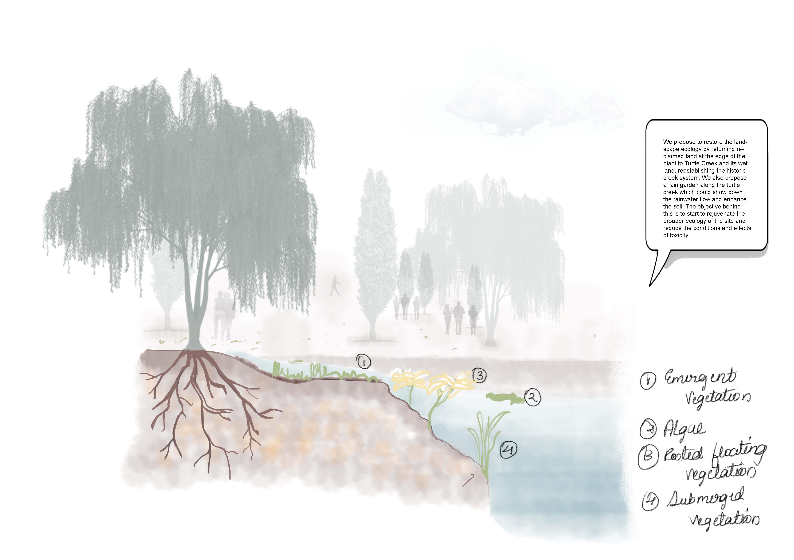

Introduction

The Edgar Thomson steel works has operated at the banks of
the Monongahela River for over a hundred years since its establishment in
1872. The decline of the steel industry and the environmental effects of the
plant have affected the lives of people in its surrounding communities in
various ways. Discussion with community members and attendance at resident-led
town halls has shaped our understanding of this plant and its impact on the
community. With the help of these voices, we have proposed a future vision,
which over the course of three long-term phases, maps out a transition to
cleaner industry, and opportunities to enhance the local ecology, restorate
land, and to create community infrastructures and open spaces. In the
following pages we elaborate on these three phases.
Phase II
Overview
In this phase, we propose to continue restoring land by planting trees and
providing green patches in the central part of the plant.
The aim is to provide more such spaces which filter air and reduce the
dominance and area for existing plant activity.

Section through the Turtle Creek
We also propose to restore the landscape ecology by returning reclaimed
land at the edge of the plant to Turtle Creek and its wetland,
reestablishing the historic creek system. We also propose a rain garden
along the turtle creek which could show down the rainwater flow and
enhance the soil. The objective behind this is to start to rejuvenate
the broader ecology of the site and reduce the conditions and effects
of toxicity.
Phase III
Overview

New industry - Vertical Farming will be developed. (Let’s imagine Fifth
Season will expand their production)
The original train trail will be retained for the transportation of
goods for new industry.
Some buildings will be reused for community facilities (community
center, libraries, grocery stores, museums, and healthcare).
Some buildings will be removed for outdoor recreation space.
Road System
More connections to the site aroundKeep the trail
Open Space
Public space system is mainly distributed along the
northern part of the site
The green system is distributed along the turtle creek and the center
of the site
How Does the Proposal Benefit the Community?

- Vertical farming can produce food for the community as well as outside the community.
- Provide job opportunities.
- Bring wealth to the community through taxation.
- Provide clean energy and green space for the community.
Open to All Public Areas

Along the eastern side of the plant facing the turtle creek.
A cultural anchor holding several art-related activities, functions, and receptions.
A building can be changed into a museum.
A pedestrian bridge connecting two buildings, providing a good view of the Turtle Creek
waterfront spaces.
Community Infrastructure and Open Spaces
In the northern part of the site.
Existing buildings can provide community services like libraries,
medical services, and grocery stores.
Different plazas that can hold various scales of public activities.
Food Industry
Main building used as vertical farming industry for the expanded
Fifth Season.
Generate renewable sources of energy like on-site solar panels.
Gradually change the air pollution and soil contamination that
the US steel plant brought along with it.